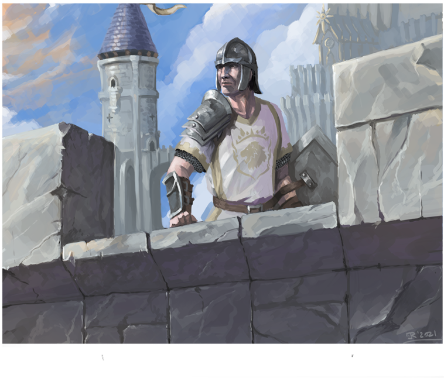

Strength represents a character's muscle quantity and raw physical power. Characters with high strength can carry more objects as well as strike harder. Strength increases the chance of breaking through armour with physical attacks, increases the character's carrying capacity (although not space) as well as increasing the effectiveness of skills that have to do with muscled exertations such as climbing or swimming.
Constitution represents a character's vitality and health. Characters with high constitution tend to outlive dangerous situations while also overcoming poisons and diseases more easily. Constitution increases a character's health, their resistance to toxins and poisons as well as certain physical actions such as keeping one's breath.
Agility represents a character's nimbleness, speed and grace of movement. Characters with high agility can move faster and with more ease than most while also having an easier time crossing over acrobatic obstacles. Agility increases actions per round, ease of movement, greater striking, turn initiative and skills that have any acrobatic components.
Dexterity represents a character's attention to small movements and finess. Characters with high dexterity have an easier tim with detailed movements such as picking locks and pockets or crafting a detailed object. Dexterity is used to increase many skill that provide characters alternatives instead of face to face combat, however is also used to calculate the character's aim to strike opponents with ranged weaponry
Instinct represents a character's overall ability to sense dangers and react to them. Characters with high instinct tend to find themselves in fewer dangerous situations than others, reacting to situations almost before they happen. Instinct directly impacts a creature's initiative in combat, their ability to intuitively dodge attacks and increases any skill which requires sensing their opponent.
Intelligence represents a character's book knowledge and memory retention. Characters with high intelligence are usually well read and well versed in the mysteries of the world. Intelligence is most notably used for scholar characters as it determines the number of languages known and their well of knowledge upon chosen subjects.
Willpower represents a character's overall ability to resist outer influencesl Characters with high willpower are not as easily persuaded nor scared and are better able to resist magical domination and illusion effects. Unlike all other ability scores, willpower is never used for rolls and is instead the difficulty check for other skills and effects.
“Our shields are more than wood, metal and cloth, they are the men and women behind it as well.” - Commander Cain